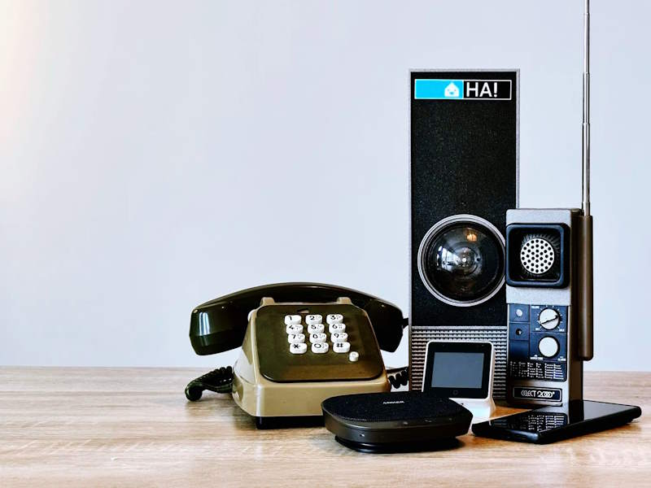

把 Home Assistant 嵌进我的每周设备巡检流程
以前每周花半小时逐个检查家里二十多台智能设备的电量、信号、自动化触发情况，现在一条命令链搞定——Home Assistant 是这条链的核心，但要接好上下游工具才省时间。
旧流程：一台一台翻设备
我家二十多台智能设备，分布在客厅、主卧、厨房、阳台四个区域。每个周五晚上例行巡检是这样的：打开每个传感器的详情页看电池电量、打开 ZHA 的 Diagnostics 看 LQI 值、手动触发一次每个自动化看能不能跑通、翻一下 energy dashboard 看本周有没有异常耗电。
最烦的是电池类设备——门窗传感器、人体感应器、温湿度计，各品牌低电量阈值不一样，有些到 20% 才报警，有些 40% 就跳红。以前我得对着手机备忘录逐台勾，半小时能搞定就算快的。中间还穿插着"哎这个设备今天没触发自动化，是自动化逻辑变了还是信号掉了"这种排查，一卡就是十分钟。
有一次 Z-Wave 门窗传感器掉了三个，我巡检到一半发现，手动跑一遍 Inclusion 花了二十多分钟——距离没控制好贴脸配了两次才成。那次之后我就想，能不能把这些步骤串成一条链，让 Home Assistant 自动跑完、给我一份报告就行。
新流程：Home Assistant 居中，上下游接两样东西
这条链的核心是 Home Assistant官网，它本身就是为这种"自动跑完给报告"的场景设计的，但要省时间得接好两个东西：上游是一个 Python 脚本从 ZHA/Z-Wave JS 里拉原始数据，下游是飞书机器人把报告推到工作群里。中间不需要我点开任何卡片、不需要手动跑任何服务。
第一步：Home Assistant 侧的前置准备
在 Home Assistant 里要做三件事，否则脚本拉不到数据：
- 每个区域建好。区域是 Home Assistant 把设备分组的基本单位，传感器、开关、灯都归到对应区域。脚本按区域拉实体状态，没归区域的设备会被跳过。
- ZHA 打开 Diagnostics 视图。ZHA 的 Diagnostics → Network topology 里能看到每个设备的
last_seen和lqi（Link Quality Indicator，越低越好），脚本就是从这里拉的。 - 所有实体开启历史记录。默认 Home Assistant 会记，但如果你之前关过，Settings → Devices & services → History 里重新打开就行。
第二步：Python 脚本从 Home Assistant API 拉数据
脚本跑在我家的 N100 小主机上——Home Assistant OS 的安装包从官方下载拿，装完直接在 Settings → Apps 里拉 ZHA 和 Ollama，和脚本在同一台机器上跑，用 localhost:8123/api 直接拉。脚本做三件事：
- 扫所有电池类实体，找
battery_level < 25的设备，记下列表 - 扫所有 Zigbee/Z-Wave 设备的
lqi，找> 100的，记为信号差 - 扫最近 7 天的 automation 事件，找
state = "failed"的自动化，记下来
脚本跑完吐出一份 JSON，然后：
第三步：飞书机器人推送报告
脚本把 JSON 格式化后 POST 到飞书机器人的 Webhook URL。群里收到的消息长这样：
本周设备巡检报告
⚠️ 低电量设备（3 台）
- 阳台门窗传感器：18%
- 主卧人体感应器：12%
- 厨房温湿度计：22%
🔴 信号差设备（2 台）
- 主卧 Zigbee 插座：LQI 127（考虑加路由节点）
- 阳台人体感应器：LQI 142
❌ 失败自动化（1 条）
- 夜间窗帘自动关闭（连续 3 天触发失败，疑似窗帘电机离线）
整个过程不超过 3 分钟。我收到报告后，该换电池的换电池，该排查信号的排查，该重配的重配。报告没东西的时候我直接忽略——这是这条链最大的好处：只有有问题才打扰我。
实操细节：两个最容易断链的环节
环节一：Z-Wave 首次配对的距离控制
Z-Wave 的 Inclusion 要求设备距离适配器 1 米以内，这是硬规矩。我脚本里特意加了一条警告逻辑：如果某台 Z-Wave 设备的 lqi 连续 3 天 > 150，报告里会额外加一条提醒"设备可能未在最佳位置配对，建议重配"。
重配时的操作步骤：先在 Z-Wave JS UI 里做 Exclusion（移除设备），然后把设备拿到适配器旁边、按重置按钮、等 Z-Wave JS 弹出 Inclusion 模式就立刻按设备触发。整个过程别把设备放回原位——等 Inclusion 完成再拿回去。具体适配器选型和配对注意事项，翻一下 Home Assistant文档 里的 Z-Wave 章节讲得很细。我之前就是因为设备拿到 2 米外配的，配完信号一直差，重配后 lqi 从 120 降到 45。
环节二：低电量阈值的统一
各品牌电池设备的默认低电量阈值不一样。Aqara 门窗传感器 20% 报警，Philips Hue 接近 10% 才报警，我之前小米 MIoT 的设备更离谱——有些到 5% 才跳出来。脚本里我硬编码了一个 25% 的全局阈值，但 Home Assistant 里可以在每个实体的 Settings → Generic sensor 里改单独的 low_battery_threshold。我现在把所有设备都设成 25%，这样脚本逻辑不用变。

效果与边界
这条链我跑了三个月，原来的半小时巡检现在变成"收到报告 → 10 分钟处理"。最明显的变化：少了两次手动复制——以前要把低电量设备名抄到换电池的袋子里、要把信号差的设备名字写到 Z-Wave JS 里去配对，现在脚本直接把设备名和所在区域打在报告里。
但这套流程什么时候不划算？两种情况：设备少于 5 台 或者 所有设备都是 WiFi 直连、不用 Zigbee/Z-Wave Mesh。前者手动看看也就 5 分钟，不值得搭链；后者 ZHA Diagnostics 那块跳过了，脚本只能拉电池数据，信号差的问题靠脚本查不出来。
还有一个边界：自动化失败事件脚本目前只扫 state = "failed"，不扫"应该触发但没触发"——后者是个更难的问题，要对比触发时间和实际执行时间的差，我暂时没加这条。
另外，配对反复失败的时候别硬扛。ZHA 配不上就试试 Zigbee2MQTT（Z2M 支持的设备比 ZHA 多不少），Z-Wave 反复掉线就换个口碑好的 USB 适配器。我之前用的适配器固件维护跟不上，换了之后 lqi 整体降了 30~40。
Home Assistant 不是一个开箱即用的"万能中控"——它是个骨架，你得往里面接数据、往外推通知。我这条链跑通之后，现在每周五晚上刷一下飞书群就行，剩下的时间该干嘛干嘛。
我把这套流程用到的 Home Assistant 配置片段、Python 脚本和飞书 Webhook 模板都整理好了，在三个仓库都能拿到——国内访问走 Gitee 更快，GitCode 那边同步的是纯备份版。GitHub 上那份包含了完整的自动化 YAML，想直接抄的去那边看。